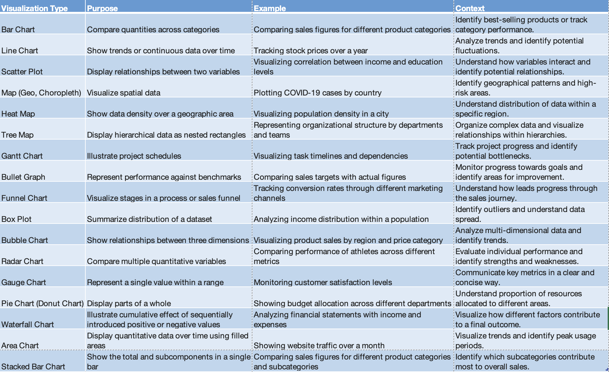

Summary:
Navigating the world of analytics visualization is an art and a science. This deep dive explores the nuances of popular tools like Tableau, Looker, and Power BI, focusing on chart types, optimization techniques, accessibility considerations, and tips for creating sleek, performant dashboards.
1. Commonly Used Visualizations:
Commonly used Visualizations Type and Purpose
Type and Purpose2. Best Practices for Color Blindness in Dashboards:
Example: CEOs with Color Blindness
CEOs Leveraging Color Choices for Accessibility
Several prominent CEOs, such as Mark Zuckerberg of Facebook and Bill Gates of Microsoft, have publicly disclosed their color blindness. They have shared insights into how color choices in their respective companies' designs take color blindness into account.
Mark Zuckerberg (Meta):Mark Zuckerberg, who has red-green color blindness, has mentioned that he can perceive the color blue most accurately. As a result, the dominant color in Meta's logo and design elements is blue.
Bill Gates(Microsoft) : Gates, who is color blind, likes to use black. This is a conscious choice to ensure visibility and readability of text and graphics.
One in 12 males and one in 200 females are born with color vision deficiency, including such well-known figures as Bill Clinton, Tiger Woods, Rod Stewart and England’s Prince William.
Please be mindful of this fact.
1. Use High Contrast Colors:
Purpose: Ensure that colors used in visualizations have sufficient contrast, making it easier for individuals with color blindness to distinguish between different data points.
Example: Use combinations like black and white or blue and yellow, which provide strong contrast.
2. Provide Alternative Visual Cues:
Purpose: Use patterns, shapes, or labels in addition to colors to convey information, enabling color-blind users to interpret the data accurately.
Example: Instead of relying solely on colors in a line chart, use distinct line styles or markers for each data series.
3. Test with Color Blindness Simulators:
Purpose: Before finalizing your dashboard, use color blindness simulators to ensure that visualizations are still clear and meaningful for users with color vision deficiencies.
Example: Tools like Coblis can simulate how a dashboard appears to individuals with different types of color blindness.
4. Avoid Relying on Red-Green Distinction:
Purpose: Red-green color blindness is common, so try to avoid using red and green as the sole means of differentiation in your visualizations.
Example: Instead of using a red/green stoplight metaphor, consider using shapes or labels for indicators.
5. Utilize Color Blind-Friendly Palettes:
Purpose: Choose color palettes that are accessible to individuals with color vision deficiencies, such as blue-yellow palettes.
Example: Tools like Tableau offer color palettes optimized for color blindness, like the "Color Blind 10" palette.
6. Include Color-Blind Users in Design Testing:
Purpose: Get feedback from individuals with color blindness during the design phase to ensure that the dashboard is user-friendly and accessible.
Example: Conduct usability testing with diverse users to identify any potential color-related challenges.
3. Dashboard Optimization:
Limit the number of widgets for better focus and performance
Use white space effectively for visual clarity
Prioritize interactive features for user engagement
Optimize calculations and data sources for efficiency
4. Sleek & Performant Dashboards:
Leverage conditional formatting for dynamic visuals
Use animations sparingly and meaningfully
Employ storytelling techniques to guide user exploration
Test dashboard performance on different devices and browsers
5. Backend & Dashboard Performance:
A. Tableau Performance Optimization:
Optimize Data Sources:
Extracts vs Live Connection: Choose the appropriate connection type based on the data size and update frequency.
Data Source Filters: Apply filters at the data source level to reduce the data transferred.
Optimize Calculations:
Minimize Calculated Fields: Limit the use of complex calculations; precompute where possible.
Optimize LOD (Level of Detail)
Expressions: Use fixed or include/exclude LOD expressions judiciously.
Workbook Cleanup:
Hide Unused Fields: Remove unnecessary fields from the view to reduce the query load.
Remove Unused Worksheets: Eliminate unnecessary sheets and dashboards.
Optimize Extracts:
Extract Refresh Schedules: Schedule extracts during off-peak hours to minimize server load.
Incremental Extracts: Use incremental extracts to refresh only new or modified data.
Optimize for User Traffic:
Load Balancing: Distribute user traffic across multiple Tableau Servers.
User Filter Optimization: Optimize user filters for efficient data segregation.
Data Aggregation Techniques:
Materialized Views (MV): Leverage materialized views for pre-aggregated data.
Data Blending: Optimize data blending for better performance.
Query Optimization:
Query Pushdown: Push calculations and filters to the database level when possible.
Partitioning: Utilize database partitioning for efficient data retrieval.
Tuning Schema: Optimize the database schema for Tableau queries.
Tableau's Workbook Optimizer:
Use Tableau's built-in Workbook Optimizer tool to identify and resolve performance bottlenecks.
Tableau Server Configuration:
1.Background Tasks and Schedules:
Optimize Refresh Schedules: Schedule extracts and refresh tasks strategically.
Background Task Prioritization: Prioritize background tasks based on criticality.
2. Server Performance Settings:
VizQL Server Configuration: Adjust the VizQL Server settings based on hardware specifications.
Gateway and Load Balancing: Configure gateway settings and load balancing for optimal server performance.
3. Cache Management:
Cache Settings: Adjust caching settings to balance performance and data freshness.
Data Server Caching: Utilize data server caching for frequently accessed data.
4. Security Configuration:
SSL Configuration: Configure SSL for secure data transmission.
User Authentication: Optimize user authentication mechanisms.
5. Server Monitoring and Logging:
Monitoring Tools: Use Tableau Server's built-in monitoring tools to identify performance issues.
Server Logs: Analyze server logs for performance-related insights.
B. Looker Performance Optimization:
Visualization Techniques:
LookML Model Optimization:
Efficient Explores: Optimize LookML models by avoiding unnecessary joins and ensuring efficient SQL generation.
Persistent Derived Tables (PDTs): Use PDTs for pre-aggregated and frequently used calculations.
Caching and Pre-Aggregation:Looker Caching: Leverage Looker caching for frequently accessed queries to reduce database load.
Persistent Derived Tables (PDTs):
Utilize PDTs for pre-aggregated data.
Data Exploration Best Practices:
Avoid Overly Complex Dashboards: Keep dashboards simple and focused to enhance user experience.
Use Filters Strategically: Optimize filter usage for more efficient data retrieval.
User-Specific Dashboards:
Personal Spaces: Encourage users to create and use personal spaces for customized dashboards.
Backend Optimization (Server Settings):
Looker Cache and Database Configuration:
Cache Settings: Configure Looker cache settings based on usage patterns.
Database Connection Pooling: Optimize database connection pooling for efficient query execution.
Persistent Derived Tables (PDT) Optimization:
PDT Scheduling: Schedule PDTs during non-peak hours to minimize impact on database performance.
PDT Maintenance: Regularly review and update PDTs for accuracy and relevance.
Query Optimization:
Query Pushdown: Push down computations to the database layer whenever possible.
LookML Indexes: Utilize LookML indexes for improved query performance.
Looker Explores:
Explore Optimization: Optimize explores to minimize unnecessary data retrieval.
C. Power BI Performance Optimization:
Visualization Techniques:
Power Query Optimization:
Query Folding: Utilize query folding to push certain operations back to the data source.
Optimize M Code: Streamline Power Query M code for efficient data transformation.
Data Model Optimization:
Relationships and Cardinality: Optimize relationships and cardinality in the Power BI data model.
Use of Composite Models: Consider using composite models for large datasets.
DAX Optimization:
Measure and Calculation Optimization: Optimize DAX measures and calculations for better performance.
Filter Context Management: Manage filter contexts efficiently.
DirectQuery vs Import Mode:
Import Mode: Use Import Mode for smaller datasets or when real-time data is not critical.
DirectQuery: Utilize DirectQuery for larger datasets that require real-time data access.
Backend Optimization (Server Settings):
Data Gateway Configuration:
Optimize Gateway Settings: Configure the Power BI Gateway for efficient data transfer.
Use of Multiple Gateways: Distribute data load across multiple gateways when necessary.
Power BI Premium Features:
Dedicated Cloud Resources: Leverage Power BI Premium for dedicated and scalable cloud resources.
Incremental Data Refresh: Implement incremental data refresh for large datasets.
Query Folding in Power Query:
Promote Query Folding: Ensure that query folding is promoted wherever possible for efficient data retrieval.
Advanced Editor for M Code: Use the Advanced Editor to fine-tune M code for optimal performance.
Data Source and Query Optimization:
Optimize Data Source Queries: Optimize SQL queries at the data source to enhance overall performance.
Use of Materialized Views: Utilize materialized views or indexed views in the underlying database.
Additional Resources and beyond:
General Dashboard Design & Optimization:
Specific Tool Optimizations:
Additional Articles & Blogs:
Interactive Tools & Resources: